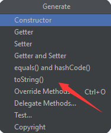

认识Java
0.前言
学Java前需要学C，至少学到结构体，C语言课程是基础。
指针、算法、数据结构不好也没关系，这篇文章主要是介绍基础，对c语言的要求不算很高。
另外，本文章用的java编译器是Intellij IDEA，版本是2021.1.1。
0.0 java idea安装
Java SE 9 安装下载路径：http://www.oracle.com/java/technologies/javase/javase9-archive-downloads.html
JDK安装方法：
新建系统变量：
JAVA_HOME（路径取jdk绝对路径）在系统变量Path后面追加：
%JAVA_HOME%\bin
%JAVA_HOME%\jre\bin添加classpath：
CLASSPATH
.
%JAVA_HOME%\lib\dt.jar
%JAVA_HOME%\lib\tools.jar验证：
cmd控制台代码：javac -version
IDE:Interllij IDEA;JetBrains
(注意：mac苹果电脑下载dmg文件。Windows下载exe文件)
0-1 Java的执行过程
对比Java与C构建模式
| JAVA | C |
|---|---|
java执行时会生成.class文件 |
C执行的时候会生成.exe文件（win） |
| java要运行必须有jdk、jre和jvm | C执行的时候不需要这些文件 |
java.class跨平台效果好 |
C.exe跨平台效果不好（win） |
- jdk(Java Development Kit)： java程序开发工具包
- jre(Java runtime environment)： java运行环境
- jvm(Java Virtual Machine)： java虚拟机
console代码
| 代码 | 注释 |
|---|---|
| javac 文件名.java | 将java文件编译成class文件 |
| java 文件名 | 运行java文件（必须是class文件） |
| java 文件名.java | 运行java文件 |
注意：class文件又称字节码文件
0-2 package
Java package 如同文件夹一样，工程文件主要分为idea、out、src、web四个大包
1.idea文件夹
.idea存放项目的配置信息，包括历史记录，版本控制信息等
2.iml文件夹
iml(infomation of module)是IntelliJ IDEA 自动创建的模块文件- 用于Java应用开发，存储一些模块开发相关的信息，还可能会存储一 些模块路径信息， 依赖信息以及别的一些设置
3.src文件夹
- 即
source，存放的是项目的源文件(.java后缀与配置文件) - 分成几个包的目的：对代码的优化、实现高聚合、低耦合特点、便于以后的扩展和更改
4.External Libraries
- Java外部库
5.Scratches and Consoles
- Intellij IDEA 提供了两种临时的文件编辑环境，两种 Scratches 分别是
Scratch files和Scratch buffers
Scratch files ：Scratch files 有着完整的运行和 debug 功能等等，这些文件需要指定编程语言类型并且指定后缀。
Scratch buffers : Scratch buffers仅仅是为了简单的编辑记录，所以不需要指定编程语言并且指定后缀，默认文件类型是 .txt。需要注意的是，Scratch buffers最多只能创建 5 个，超过 5 个将开始重用以前的，并且以前文件的内容会被重置。
6.项目视图
默认是将package层级以简洁显示的,非精简模式

对packages单击右键，点击Compact Middle Packages即可切换成精简模式


0-3 第一个程序的讲解
1 | package com.microsoft.demo; //定位你的Java代码放在src文件夹下的位置 |
ctrl+alt+v 在调用函数的时候自动生成变量
.soutv 打印最靠近的变量，也可以是你自己选定的变量
0-4 注释和文档
1.基本注释
- 和C语言一样有单行注释和段落注释
- 单行注释
// …… - 多行注释
/* ...... */注释内容不会出现在javadoc 生成的文档中
2.方法注释和类注释
- 即文档注释 :
/** ...... */注释内容写入javadoc生成的文档 - 注释格式
/** ...... */里面的内容有介绍函数，还有方法中用到的参数和返回值 - 这个可以快速生成一个方法文档（想要生成文档可以在快捷键里查doc）
- IntelliJ IDEA 里查看一个函数注释的方法是
ctrl+q
0-5 字符串演示
C语言如何定义字符串?
1 | char data[3] = {'a', 'b', 'c'}; |
Java如何定义字符串?
1 | String s1 = "Hello World!"; |
String是java中定义字符串的类，方便快捷，使用面向对象的方式还有很多骚操作- 获取字符串长度：
字符串名.length() - 使用
.concat()连接字符串 - 使用
+连接字符串
0-6 字符串结束符
C语言种的字符串是怎样的？
- C语言中没有专门的字符串变量，通常用一个字符数组来存放一个字符串
- 字符串本质上就是以
'\0'作为结尾的特殊字符数组 - 因此当把一个字符串存入一个数组时，也把结束符
'\0'存入数组，并以此作为该字符串是否结束的标志
为什么Java里没有/0？
- 严格控制字符串，防止内存泄漏
- 这是Java为了保护程序以及开发者友好，强制并自动为我们加了
'\0'
0-7 自动类型
自动类型转换
- 整型、实型（常量）、字符型数据可以混合运算
- 运算中，不同类型的数据先转化为同一类型，然后进行运算
1 | 低 ------------------------------------> 高 |
0-8 import导包和API文档
import和C中的#include一样，导入一些自带的方法- 有一些包中的函数是不需要导入的，使用同一个
package下的包不需要importjava.lang.*是java默认自带的
java文档中常用的包
| 包名 | 用途 |
|---|---|
| java.io | 通过数据流，序列化和文件系统提供输入和输出 |
| java.lang | 提供利用Java语言设计的基础类 |
| java.math | 提供进行算法的类 |
| java.text | 处理文本、日期、数字和消息类和接口 |
| java.util | 各种实用的工具类 |
java 9 document文档网址：http://docs.oralce.com/javase/9/docs/api/index.html?overview-summerary.html
0-9 Java中的数组
对比C和Java静态数组定义方式
| 定义方式 | Java | C |
|---|---|---|
| 初始化法 | int[ ] arr ={1,2,3} |
int arr [] = {1,2,3} |
| 分配空间法 | Type[] arr=new Type[size] |
int arr[size] |
普通的静态数组有缺陷：长度是固定的，不能扩容，没有灵活性
注意： String的length带括号，数组里的length不带括号
1 | str.length(); |
增强for循环
1 | for (int i: arr_2) { |
0-10 Arrays
提供方法对数组进行操作
例如：排序sort()
1 | int[] arr_1 = {1, 2, 3, 6, 7, 8,111,1111,112,1235,123}; |
例如：二分查找 Arrays.binarySearch(arr_1,6)
1 | int result_index = Arrays.binarySearch(arr_1,6); |
相同顺序下，数组是否相等Arrays.equals(arr_1, arr_2)
1 | int[] arr_1 = {1,2,3}; |
0-11 函数和方法
什么是方法?
- Java方法是语句的集合，它们在一起执行一个功能
- 方法和C里的函数是一模一样的
参考：
0-12 方法的重载
方法名相同，参数个数或者参数类型不同
1 | package com.microsoft.demo; |
好了，引导部分到此结束，下面就是java语言面向对象的部分，这些内容也算是基于我学习java过程中的总结与整合而来的笔记，希望对大家有帮助。
OOP上半部分
1-1-1 问题产生和引导
假设有一个养狗系统
| 面向过程 | 面向对象 |
|---|---|
| 流水线 | 模块化 |
| 一件事”该怎么做” | 一件事”该让谁来做” |
| 狗饿了，狗吃了食物 | 属性:狗、食物、饿；动作:狗吃食物 |
| 强调的是“吃”，“狗”只是一个参数 | 强调的是“狗”，“吃”只是一个动作 |
一件事“该让谁来做”，那个“谁”就是对象，他要怎么做是他自己的事，最后一群对象合力能把事做好了
1-1-2 对象
首先我们要明白什么是对象？
- 根据词典指行动或思考时作为目标的事物
- 简单来说就是你现在所干的事情的目标是为了啥
1-1-3 变换思维
思考什么是过程？
- 第一步怎么做，第二步怎么做，接着怎么做……最后怎么做(return 0)
- 走一步看一步，目标不明确，我们不可能把所有过程写一遍，不适用于大众
面向过程编程：（POP：Procedure Oriented Programming）
- 分析解决问题所需要的步骤，然后用函数把这些一步步实现，使用的时候按顺序依次调用
- 代码线性，严格按着顺序，侧重解决步骤，着眼局部或者具体
面向对象编程：（OOP：Object Oriented Programming）
- 该程序，要大众化
- 明确目标吗，对象就是目标，目标就是对象
- 不强调过程
1-1-4 规划明确目标站在更高层次思考问题
明确目标
- 计划、规划 设计它
- 当你执行完计划时候，达到目标
- OOP:站在更高的层次看待事物
1-1-5 上代码，设计体验面向对象编程，实例和对象
首先我们要明白什么是对象(实例)？
- 根据词典指行动或思考时作为目标的事物，简单来说就是你现在所干的事情的目标
- 显示生活的一个东西，对抽象的东西进行表示出来的产物，是一个活生生存在的事物，它是唯一的
现在要制作一个What‘s Animal 的软件，那这里面所有的对象就是大家会养的宠物，比如猫猫狗狗等
这个时候就比如设置一个狗Dogs的类(class)，这个class就是一个狗的基础模型
1 | public class Dogs { |
myDog 就是一个对象(实例)了，当我们看到 myDog 的时候只会觉得这是一只狗，但是我们不能知道它具体的样子，我们就要继续对这个狗进行描述操作，然后它就会浮现出一个具体的样子，然后在另外一个main()方法里面new一个Dogs对象(实例)
1 | public class main { |
1-1-6 成员变量行为类和this
在了解什么是属性的时候，我们先思考什么是类(class)？
- 我比较倾向把它理解成分类的类，回到What‘s Animal 这个软件当中
- 软件中有很多的宠物，很多类型的宠物，有猫、狗、猪等等，那我们最好的分类方式就是对不同的动物分类
这样我们就去创建一个Dogs类
1 | public class Dogs { |
什么是属性(共性、特性)？
- 属性是事物的性质与事物之间关系的统称。
- 事物的性质——事物的形状、颜色、气味、善恶、优劣、用途等
- 事物的关系——大于、小于、压迫、反抗、朋友、热爱、同盟、矛盾等
- 任何属性都是属于某种对象的
类当中的变量和方法都称为属性(共性、特性)或者成员变量，它们组成和构成了类，所以我们这么命令，它们是类的重要组成部分
例如同一类动物的特征有身高、体重、毛皮颜色等，会作出吃饭、睡觉等行为，这些特征和行为就是属性
1 | public class Dogs { |
这些方法(函数)在类中叫行为
1 | public void eat(){ |
this 是啥？
- 当我们在做英语阅读理解的时候，会看到一种题目叫做文中的xx段xx行的this代表指代的是前文的啥？
- 那这个问题就和这个阅读理解一样，计算机在做英语的阅读理解啦，计算机一般比我们聪明些总是能正确的回答
- this的中文意思是“这个”，当我创建好一个对象，并且将它实例化以后，我使用这个对象进行一个操作
myDog.sleep()：

这个时候回到类里 sleep() 这个方法里，里面有一个this，那很显然这个 this 调用的就是 myDog ，那 myDog.name 不就是Tom嘛
要是我的英语阅读理解题有这么简单就好了
1-1-7 注销账户和null空指针异常
使用软件要进行账户的注册，我们姑且把账户注册等同于制造一个新的对象
填写完注册信息之后，我们就变成了一个实例，假如我们想注销，这个过程就会把我们的信息从软件上抹去
这个时候我们对代码进行这样的操作
1 | public class main { |
注销之后如果你就找不到张大爷了！空指针异常啦
zhangDog相当于一个指针，在内存里指向对象，注销后，指针就指向了一块空的区域，接下来讲说明如果解决这个问题
1-2-1 OOP封装
为什么要进行封装？
- 如果狗的年龄被改成-30怎么办？这不是出错了吗，或者如果没封装起来，我岂不是可以修改支付宝余额为9999999
- OOP的封装也是如此，我们在一些类里已经写好了很多功能，用户在使用的过程中，不需要理会在类里面写了什么，只要根据自己想实现的功能使用就可以了
那OOP是如何封装的呢？
- 首先我们要明白一个道理就是，数据库的原理对设计它的公司来说是私密的，那我们在封装的过程中也要将变量变成私密的
但这个时候main()就会出现错误提示
那我们就无法操作这个类的属性了，这个时候我们就要请上 getter setter 函数了

把成员变量做的安全，使用private代替public(公共的，用户可以修改此属性)成员变量的特性，另外提供getter and setter ，这种方式叫做oop封装
getter setter 可以看作是一个按钮，这就是封装，而在按钮设置的过程中，你可以对按钮编程，让它符合条件以后才可以被启动
1-2-2 jar导入和lombok
下载lombok插件
lombok的Java包下载详见：maven repository-Project Lombok


将下载好的jar文件拖入jar文件夹下
右击选择Add as Library
选择Projcet Library
此时在类中输入注释，并导入包
1 |
还需要在设置Annotation Processors中将Enable annotation processing勾选上
重建项目
完成
这样就不用写getter setter了，但如果有特殊的方法则需要单独写，即方法的重写
1-2-3 toString()
toString() 这个方法可以输出相应的对象的函数，alt + insert一键创建getter setter函数

当然也可以利用jar包，在类前加注解
1 | import lombok.Getter; |
@Date相当于包含以下三种：
toString()Override Methods()Delegate Methods()
1-2-4 构造方法
回忆一下数组是怎么写的?
- 两种不一样的定义和给数组赋值的方式，创建对象的方式和第二种先定义再赋值的方式是一样的
1 | //1.初始化 定义+赋值 |
我们如何让对象也可以初始化呢？
这就需要构造方法 alt+insert
- 构造方法不要有类型，方法名和类名一样
- 在一般情况下要加一个空参构造方法
1 | public Dogs(String name, String variety, int age, String food) { |
然后就可以实现对象的初始化
1 | public static void main(String[] args) { |
1-2-5 构造方法的重载与再探this
构造方法也是可以重载的
1-2-6 垃圾回收
回到1-1-7，找不到张大爷了，空指针异常怎么办？
- java一般是不需要你手动回收的，如果一定要自己手动来垃圾回收，可以使用
System.gc()这个方法

这样就不会出现空指针异常了
1-2-7 静态变量和静态方法
静态变量
1 | public static String plot ="NanG"; |
静态方法
1 | public static void goplot(){ |

1-2-8 private static
万一静态变量被改了怎么办？
咱们小区名被黑了
这就需要用到private static
1 | private static String plot ="NanG"; |
这样定义变量和方法只能在有类名来使用，可以看作是所有类都必须做的事情，而对象无法使用，对象无权选择或者不选择。
1-2-9 static单例模式
单例模式怎么来的？
private static定义变量和方法只能在有类名来使用，可以看作是所有类都必须做的事情，而对象无法使用，对象无权选择或者不选择，这里就衍生出了一种设计模式：单例模式
单例模式怎么用？
- 单例模式的存在是为了保证一个类仅有一个实例，无法克隆，并提供一个访问它的全局访问点
1 | public class Earth { |
参考：
1-2-10 内部类
内部类是啥？
- 类里面再来一个类
- 静态内部类只能用静态变量
- 方法内部类，只能在方法里面用
- 用的比较少，十分难维护，可以自己去了解
OOP下半部分
面向对象三大特性：封装 继承 多态
2-1-1 需求重定义
我们的宠物系统要如何维护呢？
人们养宠物会有很多的选择，除开狗以外还会有猫、老鼠、熊、猪等等等
2-1-2 继承
如何将这些重复的代码进行一个归类和总结呢？
- 我们会有许多方法去维护这个软件，如果要把所有动物的类都写上去，你会发现写上的都是重复的代码，我们需要将重复代码进行总结，由此提出概念：继承
什么是继承？
- 泛指把前人的作风、文化、知识等接受过来
- 把重复的代码放在一块，让其他的动物接受过来，这也是一种继承
我可以创造一个类叫”动物”，这样其他的动物都可以在”动物”类中继承相同的地方，继承的关键词是 extends
我们把原来属于Dogs的内容转移到了Animal中，使用 extends ，最后在主函数中像之前一样Dogs类
并且 Cat在继承Pet以后也可以像狗一样实践，这样就使得我们的代码的复用性很强，也符合了大众化
2-2-2 多层继承
什么是多层继承 ？
- 像灰太狼家族，一层一层的继承，爷爷传承到爸爸、爸爸传承到孙子
- 一个类不能直接继承多个类，java是单继承语言，不支持多继承
- 不能写成
class A extends B,C - 但可以实现继承多个类
class A extends B，class C extends A这样C就同时继承了B和A两个类了
1 | public class Dogs extends Animal{ |

2-2-3 方法的重写
如果要对继承中某个方法进行修改怎么办？
- 在类继承了另外一类，但是对一些方法需要进行修改的时候就需要用到方法的重写，比如动物的叫声不同
1 |
|
动物叫，这是它自己拥有的特性，是他自己写的，不是来自他爸的，他从爸爸那革新了
子类自己认为，应该打破它父亲的传统，进行革新，革新的内容就是方法体
super 这个函数是继承父类的所有方法，如果要改写就需要将这个注释掉
重写(Override)与重载(Overload)的区别是啥？
- 重写(Override)是子类对父类的允许访问的方法的实现过程进行重新编写, 返回值和形参都不能改变
- 重载(Overload)是在一个类里面，方法名字相同，而参数不同。返回类型可以相同也可以不同
参考：
2-2-4 super啃老
super啃老就是引用父类的方法，如图所示。
2-2-5 啃老啃到彻底
构造方法的重写
继承无法继承父类的构造函数，所以还需要重写构造方法，这样才可以进行对象的初始化


1 | public Animal(String name, String variety, int age, String food) { |
2-2-6 final
遗产没人继承了，也不可能继承–final
例如我们创建一个拉布拉多类继承Dogs类，并用final定义
- 用
final定义的类不能再被继承 - 用
fianl定义的方法不能再被重写 - 用
final定义的变量是常量且不能再被修改
方法也有重写，拿狗是否能导航来举例，Dogs类不加final结果：
1 | public boolean isGudieBlindness(){ |
Dogs类加final结果：
1 | public final boolean isGudieBlindness(){ |
Labrador类不能重写fianl的方法
1 | 'isGudieBlindness()' cannot override 'isGudieBlindness()' in 'com.microsoft.demo.Dogs'; overridden method is final |
再例如，用final定义的变量是常理，而在命令规范中，常理必须大写，单词用下划线隔开
1 | private static final String COMMUNITY_NAME ="NanG"; |
快捷键：ctrl +shift+u一键大写shift+f6一键更改变量
2-2-7 提出新的问题
那new Animal()是不是没用了？——抽象概念的引出
- 在这个系统中
Animal类是一个没有抽象的类，就像你养一只动物肯定是具体猫或狗等，因此，Animal这个类是不会能被new的，这样就涉及了抽象类的概念 Animal类是用来继承的，没人会用Animal，我们创建对象的时候只会用到猫猫狗狗类- 如果子类继承了父类，但是并未给子类写行为的具体内容，这样子类调用行为的时候出现的是父亲的行为，也就是说，如果我们定义仓鼠叫，输出的是”动物叫”，而不是仓鼠的具体叫声
万一我们创建的仓鼠类，没有定义叫声怎么办？抽象类来解决这个问题
2-3-1 抽象与具体——抽象类的衍生
你不能养一个抽象”动物”，而是具体养了”什么”
Animal本质来说是没有人用的，它是一个抽象的，它抽取了这些猫狗的共性，作为使用- 抽象的反义词是具体，抽象的目的是为了概括(解释)这些具体事物
- 加入抽象类的关键词是
abstract，抽象类是不能再被new的类，但是它可以被其他的类继承
2-3-2 抽象方法和抽象类的使用
如何理解抽象方法的作用呢？
- 你会发现，想像一下，动物的叫声太多了，我们可以统一叫这个行为，但是我们不能统一他们的叫的方式一样（叫声一样），所以我们要在具体类中具体他们的叫声
- 同时使用抽象方法可以起到提示作用，因为抽象方法必须重写，如果忘记重写就会有报错
Animal类中抽象方法是不能有实际意义的
应该这么写（举例）
1 | public abstract void breaking(); |
继承抽象类(Animal类)的子类(Cat类)必须重写父类的抽象方法，且抽象方法必须在抽象类中
1 | pubilc class Cat extends Animal{ |
同时子类也无法super父类了，因为父类没有这个方法
1 | public void breaking(){ |
2-3-3 接口
如果方法全是抽象的怎么办？
- 在抽象类中有抽象方法，如果把抽象类里的方法全部变成抽象方法，可以用接口来替代这个抽象类
New Java Class 选择Interface
接口里面所有方法都是抽象的，实现接口的类，会把接口中定义的方法全部重写
1 | public interface Human { |
2-3-4 class和interface的区别
接口和抽象类本质上有什么区别？
- 抽象类是针对具体的事物进行抽象
- 接口是针对动作、行为进行抽象，且接口中避免出现名词
2-4.1 多态
多态是什么？
- 多态是同一个行为具有多个不同表现形式或形态的能力
- 多态就是同一个接口，使用不同的实例而执行不同操作
多态存在的三个必要条件
- 继承
- 重写
- 父类引用指向子类对象：
Parent p = new Child();
向上转型
- 子类引用的对象转换为父类
- 此处父类对象可以是接口
- 花木兰替父从军就是向上转型，隐藏子类
1 | Animal a = new Cat(); |
向下转型
- 把父类对象转为子类对象
- 前提是父类对象指向的是子类对象，即在向下转型之前，它得先向上转型
- 向下转型只能转型为本类对象（猫是不能变成狗的）
- 做回自己就是向下转型，开始变换
1 | Cat c = ((Cat) a); |
参考：
2-4-2 匿名内部类
为什么叫匿名内部类？

- 匿名内部类也就是没有名字的内部类
- 如果某个局部类你只需要用一次，那么你就可以使用匿名内部类
- 使用匿名内部类必须继承一个父类或实现一个接口
抽象类是不能被new的，但是接口可以，new接口时会自动创建重写
1 | public class Application { |
3-1-1 权限修饰符
话不多说，直接上教程，都是概念性的东西。
参考：
3-1-2 Object
Java Object 类是所有类的父类， Java 的所有类都继承了 Object，子类可以使用 Object 的所有方法
我们创建一个类时，如果没有明确继承一个父类，那么它就会自动继承 Object，成为 Object 的子类
参考：